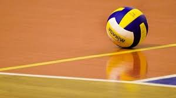

Disini saya menyebutkan hobi saya yang semuanya olahraga sebenarnya masih ada lagi tapi saya lupa, maka saya hanya menyebutkan yang saya ingat sebagai berikut :
1. Voli
Yang pertama adalah olahraga voli. Saya baru rutin mengikuti kegiatan extrakurikuler olahraga bola voli pada pertengahan semester 1 di SMKN 2 Buduran. Menurut saya olahraga bola voli adalah olahraga yang sangat mudah dipelajari.
2. Futsal
Yang kedua adalah olahraga futsal. Saya biasa bermain futsal dengan teman rumah atau teman sekolah.